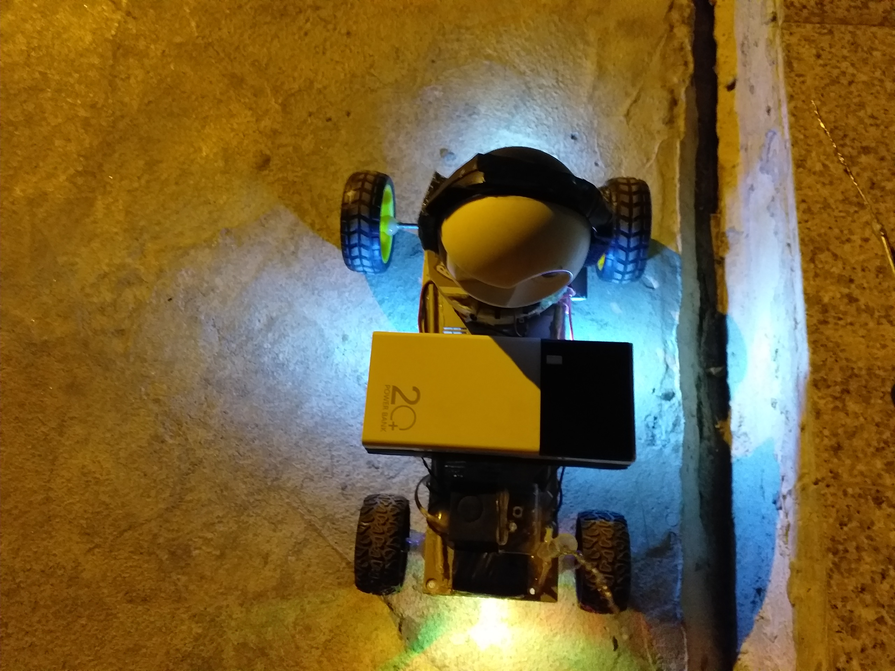
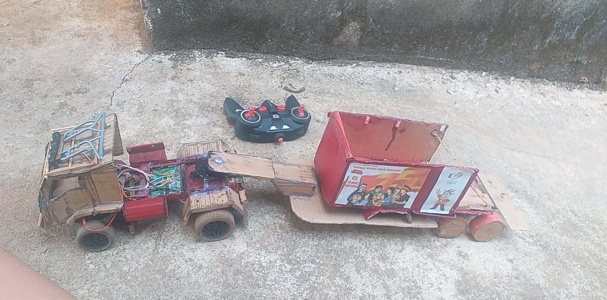
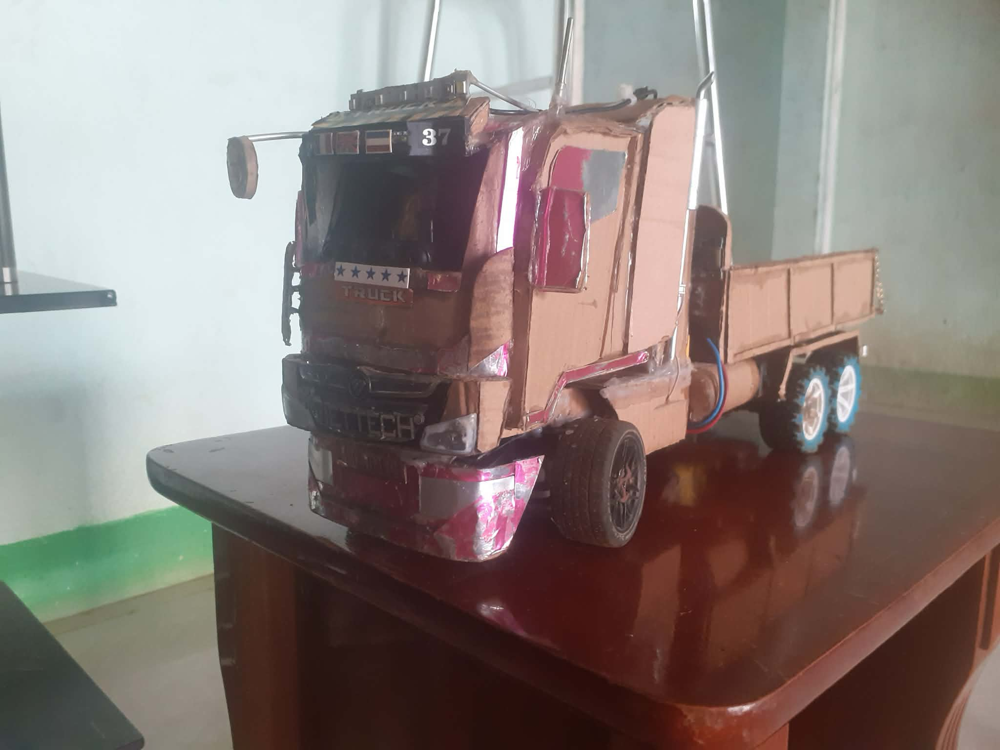
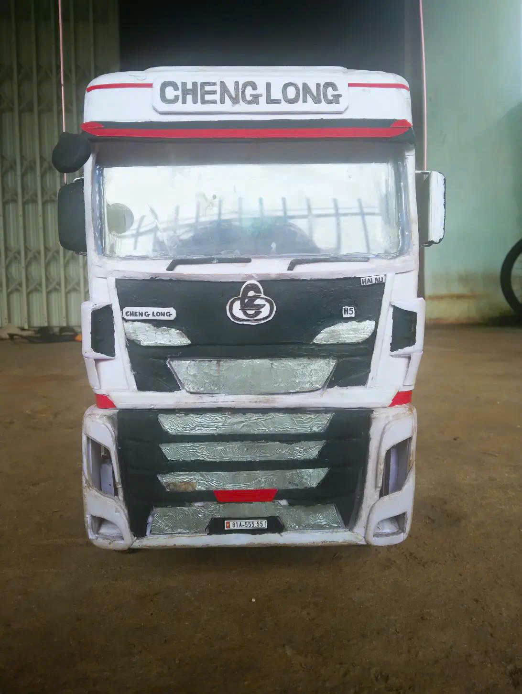
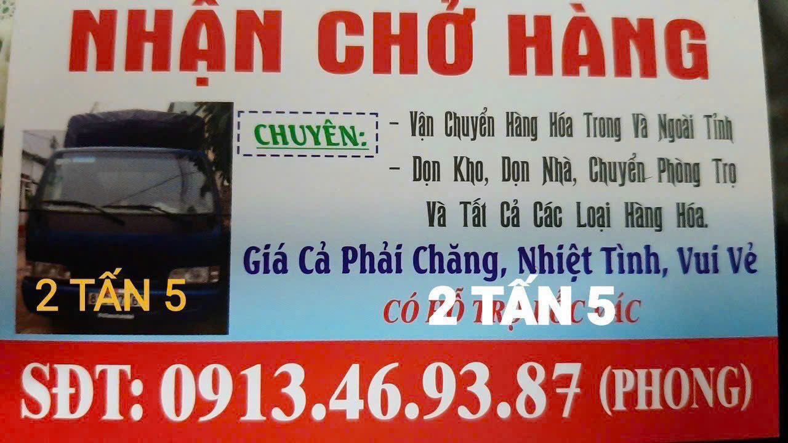

Đang tải, gần xong rồi!!...
Đang tải, gần xong rồi!!...
Sự kiện
Kaido là một thương hiệu nhỏ được thành lập vào tháng 6/2025 bởi 3 thành viên góp mặt, hướng đến việc nghiên cứu và chế tạo các sản phẩm xe điều khiển (RC) với nhiều cấu hình, từ cơ bản đến các phiên bản nâng cao.
Bên cạnh các sản phẩm RC, Kaido còn phát triển những dự án DIY điện tử với tiêu chí chi phí thấp, thiết thực và tận dụng tối đa các linh kiện sẵn có. Qua đó, Kaido hướng đến việc tạo ra những sản phẩm tiện ích, đồng thời góp phần hạn chế rác thải điện tử thông qua việc tái sử dụng các linh kiện và thiết bị cũ.
Website này được xây dựng như một nơi giới thiệu sản phẩm, chia sẻ các dự án DIY, lưu trữ những ý tưởng để tham khảo cũng như là kỷ niệm của thương hiệu. Nội dung đặc biệt hướng đến những bạn yêu thích xe điều khiển (RC), điện tử, DIY và STEM, qua đó có thể tìm thêm cảm hứng để tự xây dựng những dự án của riêng mình.
Đây là loại xe công nông đầu tiên của thương hiệu, có khả năng chở hàng rất mạnh mẽ chỉ với một chiếc động cơ nhỏ.
Thiết kế chắc chắn, dễ sửa chữa ít hỏng vặt vì nó có kết cấu đơn giản chỉ có công tắc không mạch phức tạp cầu kỳ, đây là cấu hình khởi đầu.
Có trọng tải kéo lên tới 5kg
Pin sạc có thể sạc lại và dung lượng 5000mah cho ra thời lượng sử dụng lâu dài, bền bỉ theo thời gian.

Đây là loại xe đặc biệt của thương hiệu, đặc điểm nổi bật có một chiếc camera đằng trước giúp quan sát khu vực xung quanh
Muốn sử dụng bạn có thể kết nối bằng wifi xem hình ảnh thời gian thực, với khả năng linh hoạt quay mọi hướng bằng cách chạy xe. Tất cả được điều khiển bằng wifi.
Thời lượng dùng pin có thể lên tới 20000mah và khả năng sạc nhanh 20W cho ra thời gian sử dụng cực kỳ lâu dài
Sử dụng cho việc quay hành trình mọi hướng, quay những khu vực mà con người khó nhìn thấy
Ngoài ra nó còn có ngoại hình bắt mắt, nổi bật.

Đây là bản thiết kế xe tải chở hàng cơ bản đầu tiên của thương hiệu. Có thể điều khiển tiến lùi trái phải. Đây là cấu hình cơ bản nhất dành cho xe điều khiển. Nó là nền móng để phát triển thiết kế các mẫu xe sau này.
Đây là loại phiên bản có rơ móc gắn vào xe với khớp gắn cực kỳ chắc chắn làm hoàn toàn bằng thủ công không máy móc phức tạp cầu kỳ.
Có thể chở hàng với trọng tải lớn hơn đối với một cấu hình cơ bản.


Mặt trước của xe.


.jpg)
Đây là bản xe nâng cấp lớn lần đầu tiên, động cơ cải tiến bánh răng bằng kim loại mang thêm sự bền bỉ
Tuy xe tải chạy chậm nhưng lực mô men lớn có trọng tải lên tới 5kg với một chiếc động cơ nhỏ và tiết kiệm điện
Cải thiện hơn về pin sạc
Thiết kế đơn giản dễ sửa chữa với kết cấu đơn giản ít hỏng vặt, luôn bền theo thời gian.

Remote điều khiển có màn hình quản lý âm thanh cho xe bằng công nghệ bluetooth.
Đây là phiên bản thành công nhất của thương hiệu, với thiết kế hiện đại và cải tiến về hiệu suất động cơ so với bản v3.
Dùng pin 2s điện áp sẽ cao hơn so với bản trước chỉ dùng 3,7V. Ưu điểm có thể thay pin dễ dàng hơn.
Động cơ hiệu suất mạnh với lực mô men cực lớn kéo trọng tải 6kg nhưng vẫn có tiết kiệm điện.
Còi được kết nối bằng bluetooth phát nhạc.

Sử dụng chip xử lý 2.4Ghz giúp xe có khả năng điều khiển từ xa ổn định hơn, phạm vi điều khiển xa hơn so với các phiên bản trước đó.
Hình ảnh nổi bật

Hình ảnh cải thiện nhíp xe bằng kim loại cơ bản dễ làm
Tuy đơn giãn nhưng nó có độ ổn định, độ nhún cải thiện hơn so với các phiên bản trước


Một loại xe được thiết kế đặc biệt để hoạt động trên địa hình khó khăn với gầm cao, bánh xe lớn, giúp tăng khả năng bám đường và vượt qua các chướng ngại vật.
Sử dụng nguồn năng lượng như xe tải bản V4.
Mạch điều khiển 4 kênh cho bẻ lái "cực gắt" và driver L298N phù hợp với động cơ. Đồng thời 2 mạch này phủ ẩm rất kỷ càng 100% nên có thể hoạt động ổn định trong mọi điều kiện như ẩm, va chạm, nóng, lạnh, lôi, phép,...
Sức mạnh với motor 180 giảm tốc và bánh răng kim loại được chúng mình tra dưỡng dầu mỡ cực kỳ tốt nên xe hoạt động cực kỳ ổn định trên nhiều con đường khác nhau.
Ngoài ra, RC này dùng thân hình làm bằng gỗ đã được phủ ẩm toàn thân cả cơ chế nhíp cả trước lẫn sau tăng khả năng chống rung cực tốt.
Đặc biệt là chi phí đầu tư rất gần gủi với học sinh/sinh viên, linh kiện cực dễ kiếm và lắp ráp/độ chế rất đơn giản.
Mẫu xe đã được ra mắt vào ngày 17/08/2026 và chạy ổn định.
Chiếc xe tải v5 có ngoại hình dựa theo mẫu xe Chenglong H7 cỡ lớn, có thể nhún cơ động.
Đây là phiên bản xe tải mới nhất của thương hiệu, với thiết kế hiện đại và cải tiến về hiệu suất động cơ so với bản v4.
Dùng ắc quy 12V mang hiệu suất cao hơn so với bản trước chỉ dùng 7.4v mang khả năng kéo trọng tải cực lớn với động cơ giảm tốc 12V loại 775.

Đầu xe sau khi hoàn thành, làm hoàn toàn bằng thủ công và chi phí rẻ nhất nhưng lại cho ngoại hình dễ nhìn.
--Hình ảnh khác của sản phẩm--
--Video vận hành--

CHUYÊN:
-VẬN CHUYỂN HÀNG HÓA TRONG VÀ NGOÀI TỈNH
-DỌN KHO, DỌN NHÀ, CHUYỂN PHÒNG TRỌ VÀ TRONG TẤT CẢ CÁC LOẠI HÀNG HÓA
-NHẬN XE TẢI CHỞ HÀNG 2,5 TẤN
-GIÁ RẺ PHẢI CHĂNG, NHIỆT TÌNH, VUI VẺ.
📍 Khu vực: Miền Trung
📍 Nhận chở : TRONG VÀ NGOÀI TỈNH
📞 Số điện thoại: 0913.469.387 (PHONG)